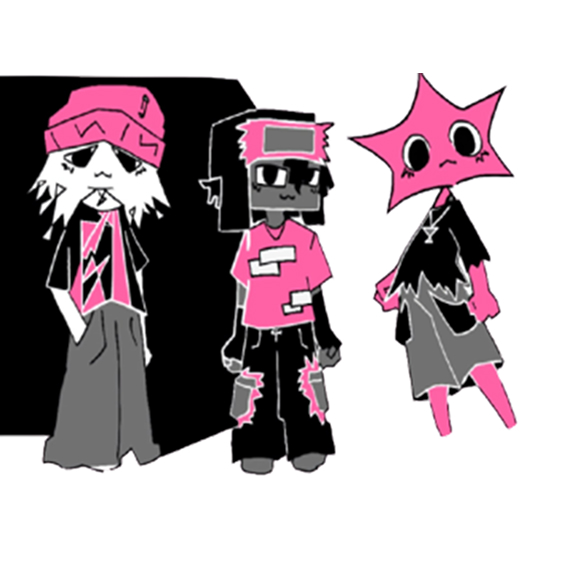
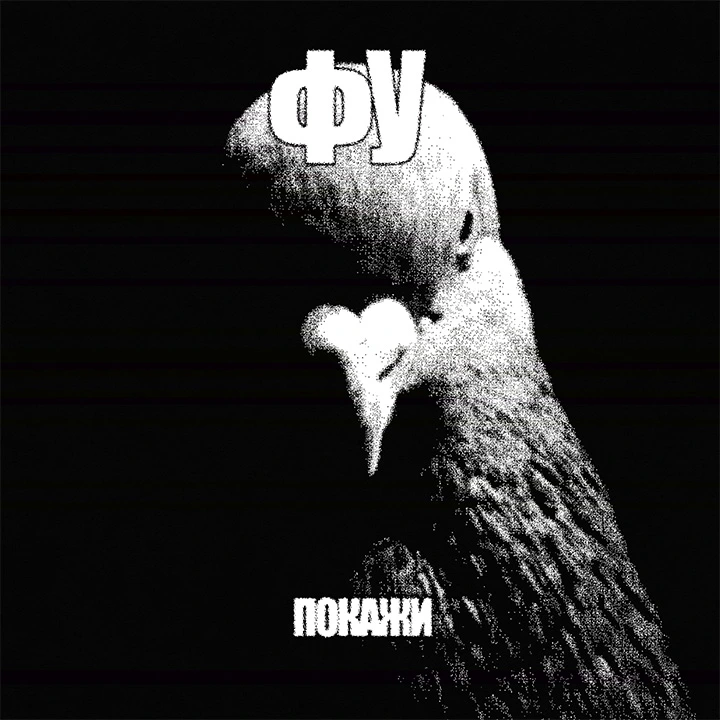
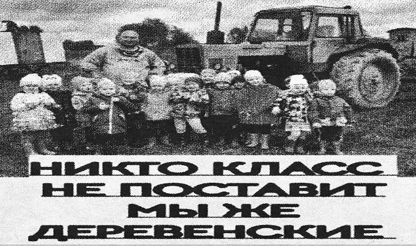

О нас
Мы — Медиа
о мемах
Старые и новые, свежие и протухшие, смешные и несмешные — мы посмотрим все! А потом ещё и обсудить успеем!
В данном проекте будут собраны, объяснены и каталогизированы мемы тиктока рунета и зарубежья!


Что такое этот ваш мем
Короче, мемы — это такие культурные вирусы: шутки, картинки или фразы, которые все пересылают. Зная мемы разных лет, ты всегда будешь в теме и сможешь блеснуть этим в компании.


а ещё есть мерч!
Пишите в телеграмм @Bueeeef, если хотите оформить наш мерч и быть самыми мемными)